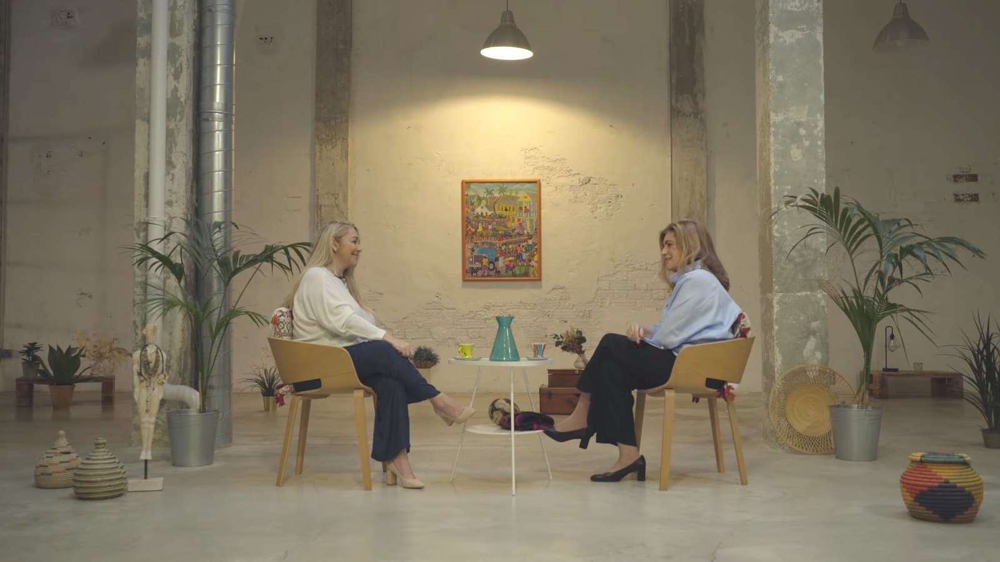
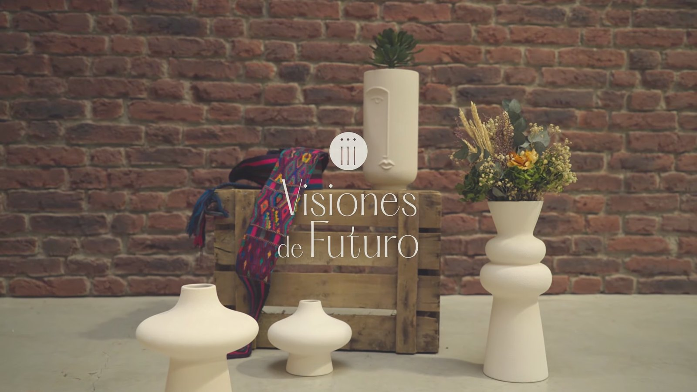

EUROsociAL+
Dos campañas en vídeo sobre lo que ha logrado la cooperación de la Unión Europea con Centroamérica, contadas como una conversación pausada: dos sillas, una mesa y tiempo para escuchar.
 Ver
Ver
- Cliente
- EUROsociAL+, programa de la Unión Europea
- Fecha
- 2022
- Mi papel
- Dirección
- Formato
- Dos campañas en vídeo
El programa
EUROsociAL+ es un programa de cooperación de la Unión Europea con América Latina. Desde 2005 trabaja para reducir las desigualdades, mejorar la cohesión social y fortalecer las instituciones públicas en 19 países latinoamericanos, a través del aprendizaje entre pares y el intercambio de experiencias entre instituciones de ambas regiones. Sus tres áreas son la igualdad de género, la gobernanza democrática y las políticas sociales.
Las campañas
Dos piezas construidas en torno a una conversación entre dos consultoras del programa: En materia: Guatemala y Honduras, sobre el trabajo realizado en ambos países, y Visiones de futuro, sobre los retos que vienen. Un plató cálido con artesanía de la región, luz natural y un ritmo sin prisa, para acercar un tema técnico.
Fotogramas


